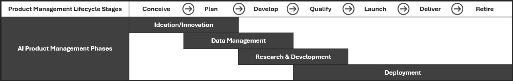

Blending AI and Product Management
The introduction of AI into product development represents a transformative shift in how products are developed, managed and evolved. AI product phases are integrating into various stages of the product management lifecycle. Successfully aligning and integrating the AI product management phases into product management lifecycle will accelerate the pace of innovation and introduce new capabilities, but may also introduce new challenges.
In addition, the role of Product Manager must evolve alongside the changes posed by AI to ensure that they understand the potential, limitations and risks of AI.
In this article, we explore how AI product management phases intersect with “traditional” product management lifecycle stages and the impact of this overlap.
Product Management Lifecycle Stages
The Product Management Lifecycle covers the entire lifecycle of a product from inception, through design and engineering, to service and retirement. Each stage plays a role in understanding and addressing customer needs, aligning with business goals and responding to market dynamics.
| Stage | |
|---|---|
| Conceive | This stage involves identifying market opportunities and developing a concept for a new product. |
| Plan | During that phase the plans for the product development are created (incl. timelines, resources, budgets etc.) |
| Develop | This is the phase in which the actual design and development of the product takes place (engineering, prototyping, testing etc.) |
| Qualify | In this stage, the product undergoes testing and qualification to meet the necessary standards and specifications |
| Launch | This phase involves preparing for and executing the introduction of the product to the market. |
| Deliver | Post-launch, the focus is on delivering the product to users and ensuring user satisfaction. |
| Retire | Eventually, the product will reach the end of its market life and be retired. |
AI Product Management
The development and management of AI products requires a structured approach to navigate the unique challenges and opportunities presented by AI. The end-to-end process can be described in the s below, where each phase is crucial for ensuring that the AI product not only meets the needs of users and business, but also that it is robust, scalable and can be integrated within existing systems and processes.
| Phase | |
|---|---|
| Ideation/Innovation | This is the initial phase where the team is formed, defines the problem and identify how AI can address it. The AI product and its MVP are defined at this stage. |
| Data Management | Data is the foundation of an AI product and managing it effectively is critical. In this phase the data to be used are identified, alongside with any constraints. Well-defined requirements for data collection, preparation and storage must be captured in this phase. |
| Research & Development | In this phase the AI model is determined and the work of developing it takes place. The model is trained with the appropriate datasets and its performance is evaluated. A functional prototype is developed and internal and external feedback is gathered. |
| Deployment | The final phase where the infrastructure is fully built and the AI solution is implemented in production. This phase includes integration with existing systems and processes. Scaling the solution to real-world workloads and data is part of this phase. |
The phases above do not replace the stages in the product management lifecycle. They intersect and integrate with the existing lifecycle stages to improve the development and management of AI products.
Merging the Two Worlds
Understanding how AI product management phases overlap and affect the stages of the product management lifecycle is important in order to effectively integrate AI into the product strategy, leverage its full potential and navigate the challenges AI introduces.
- AI integration introduces new risks and uncertainties, particularly around data quality, model performance and ethical considerations, and new architectures and infrastructure are usually required.
- While AI can push the boundaries of product functionality, it is important to remain aligned with business goals and market needs. This is crucial for ensuring that the AI product is viable, marketable and capable of generating ROI.
- The costs associated with AI can be substantial (e.g. acquiring quality data sets, infrastructure, training etc.) and the return on investment for AI products can be uncertain, and measuring the impact of AI on product success can be complex.
Below, we provide a high-level overview of how AI product management stages intersect with traditional product management lifecycle stages and their impact at each stage.

Conceive
This stage mainly intersects with the Ideation phase of the AI product management. As we introduce AI into an existing product or develop a new one, we must clearly define how AI can solve specific problems, and not focusing only on market opportunities. Understanding not only the market needs, but also the potential and limitations of AI is crucial during this phase.
Plan
The Ideation and Data Management phases of the AI product management intersect with the Plan phase. During that stage we must ensure that we include considerations for data acquisition, data quality standards, storage needs, AI model training times, compliance, specialised AI resources (e.g. data scientists, data engineers etc.)
Strategic partnerships with data providers for high-quality data, must also be considered during that stage. In addition, practical insights into handling the increased complexity that AI integration brings to product development must be identified and captured during that stage.
Develop
This phase also intersects with two phases from AI product management, Data Management and Research & Development. With the introduction of AI, active data management and development of AI models is required, which is more dynamic than traditional product development. For example, we need to design and implement CI/CD pipelines specifically for AI development, which ensure that the models are iteratively tested and refined in near-real-time.
Thus, during that phase we must adopt a more iterative and adaptive approach to refine AI models and the need for collaboration between technical and business teams is increased.
Qualify
The Research & Development and Deployment phases intersect with the Qualify stage. During this stage with the introduction of AI, we require the validation of AI models against real-world data and scenarios. Regulatory compliance and ethical considerations specific to AI products (e.g. fairness, transparency etc.) should be included in the qualifications needed for an AI-driven product.
We must also ensure that the necessary infrastructure and processes for AI deployment are in place.
Launch, Deliver and Retire
Finally, the last three stages are intersecting with the Deployment phase of the AI product management, where the AI solution is deployed, continuously monitored and updated until the end of the product lifecycle. During that stage we must ensure the ongoing monitoring and adjustments of the AI solution, including tracking user feedback.
Strategies for a sustainable end-of-life for an AI product, e.g. data de-identification, model decommissioning etc., should also be considered.
Towards an Integrated Framework
The integration of the AI product management phases into the current product management lifecycle is essential for any organisation looking to integrate AI into their existing product. Being able to understand the impact of AI at each stage will be crucial, and this integration will require a shift not only in tools and processes, but also in mindset.
As organisations go through this journey of merging different methodologies and adapting, they need to think holistically about their end-to-end product management strategies and the shifts in roles, processes and outcomes, to drive the success of their AI products and integrations.